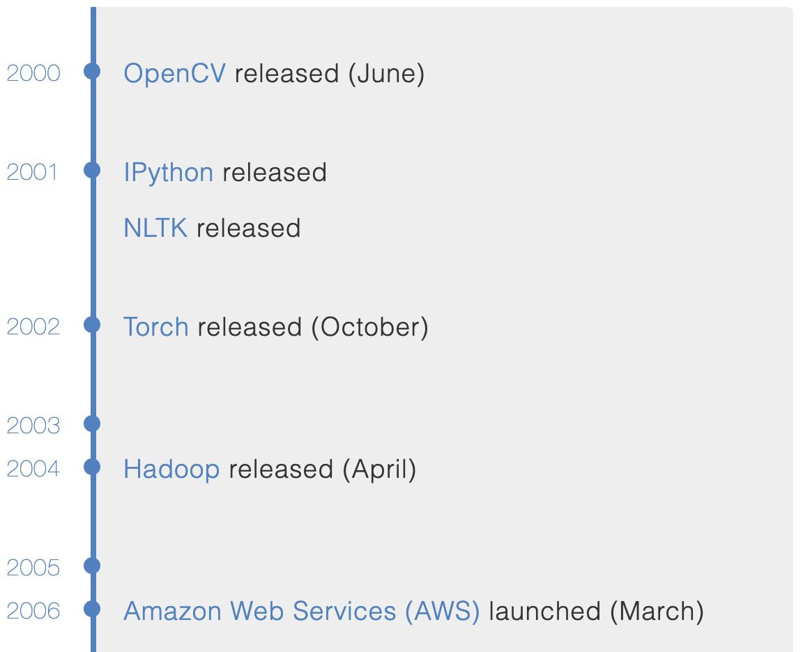
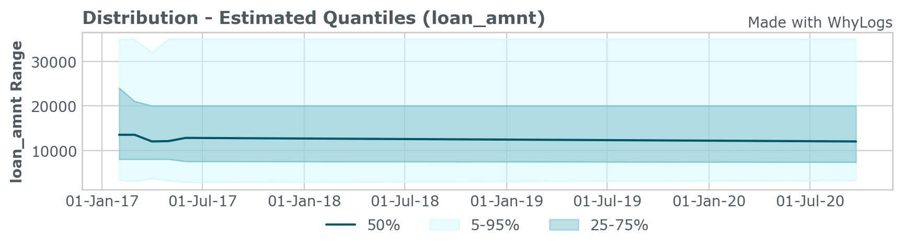

📜 History (of Data Platforms and Apps)
History (of Data Platforms and Apps)
What’s the history of data-intensive applications and how did we end in a state where machines can classify cats better than us?
[Soft/Hard]ware History through the Lens of AI
An interesting take at a hardware-software intersection through the lens of AI applications. Some things that I found particularly fascinating:
This essay begins by acknowledging a crucial paradox: machine learning researchers mostly ignore hardware despite the role it plays in determining what ideas succeed.
- Computing started with single-purpose machines.
- Then, in 1969, the general-purpose era began. This meant any move for the application-specific hardware was economically unfeasible because the performance benefit would fade away within 1-2 years with an ever-increasing number of transistors.
The few attempts to deviate and produce specialized supercomputers for research were financially unsustainable and short-lived.
- However, there was a silver lining for specialized hardware. Von Neumann Bottleneck — the available compute is restricted by “the lone channel between the CPU and memory along which data has to travel sequentially”. Hence, in the 2000s GPUs were repurposed to be used with ML applications.
- In 2012 Google used 16,000 CPU cores to classify cats. In a year, the same task was completed with only 2 CPU cores and 4 GPUs.
- Hardware is only economically viable if the lifetime of the use case lasts more than three years. Hence, it already makes sense to build specific hardware for matrix multiplication for quite some time. Next come the unstructured sparsity and weight-specific quantization (what GPU manufacturers are recently doing).
- The rate of return for additional parameters is decreasing (e.g. Inception V3/ V4: 21.8 vs 41.1 million parameters, 78.8 vs 80 % accuracy).
- The training costs of GPT-3 is estimated to exceed $12 million dollars.
A Brief History of Machine Learning Platforms
No Hadoop, no AWS — barbarian days. Check out the full timeline here, it’s quite fun.

Is Data Hype Real
Another article looking at different branches developed in a field of modern data processing. Describes prominent players in areas of data pipelines, catalogs, collaboration and quality.
In 2010, the number of large enterprises with a Chief Data Officer (CDO) was 15. By 2017, it was up to 4,000. In 2020, it’ll be over 10,000. Why? Data is revenue and revenue is sexy.
State of AI
Yearly state of the AI report. Here are some excerpts from the executive summary (page 7 of the report):
- The hottest area in AI: still NLP
- Closed AI — only 15% of papers publish their code
- Biology starts to benefit from AI (the first AI discovered drug)
- Corporate-driven academic brain drain
- US and China lead the AI research
- Specialized hardware investments (see the hardware lottery article above). Semiconductor companies become more and more important.
- Two wrong arrests using facial recognition.
ML Ops
One of the hottest buzzwords in a room. However, I believe, this (and not the mysterious ML platforms) will close the gap in the adoption of ML applications and bring the power of data to the rest of us.
Microsoft
Microsoft continues to do an amazing job for the ML community. Now with the GitHub as well. There is a second part (part 1) of the series related to the ML Ops — what data ops should have become. Integration with github actions is amazing and now supports The Great Expectations action (which is an awesome project in itself). > GitHub Actions don’t just do CI/CD, they provide powerful and flexible automation for ML engineers and data scientists.
WhyLogs
Much of the difficulty in maintaining an ML system comes from data drift. WhyLogs calculates approximate statistics for datasets of any size up to TB-scale. Available in both Python and Java.
Here is a data distribution over time from the example walkthrough:
